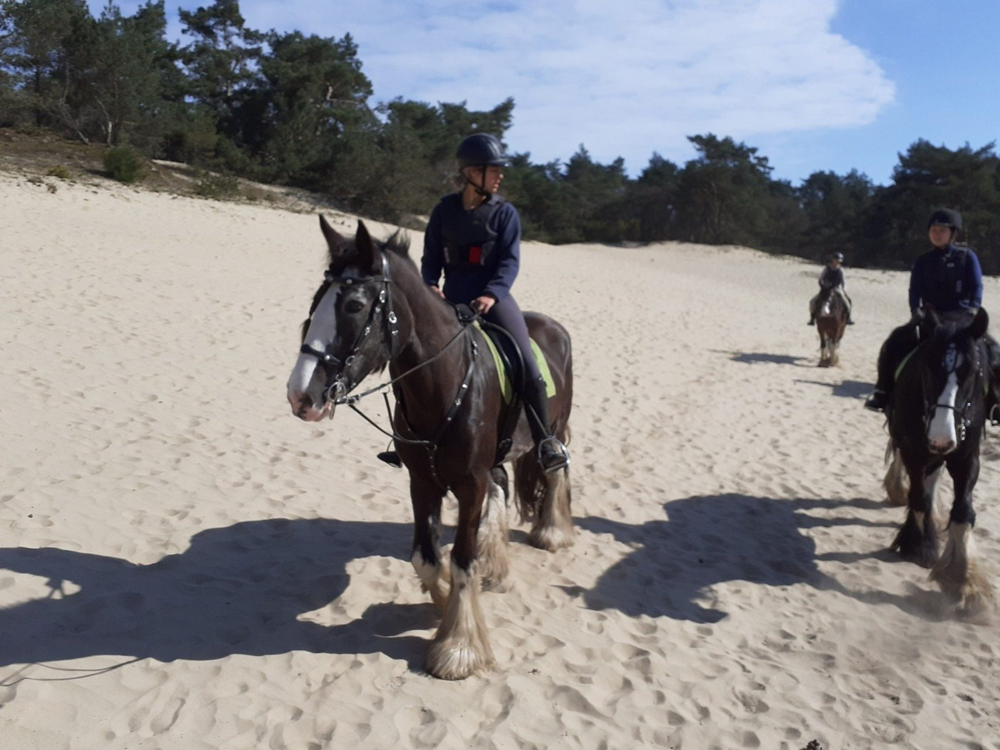
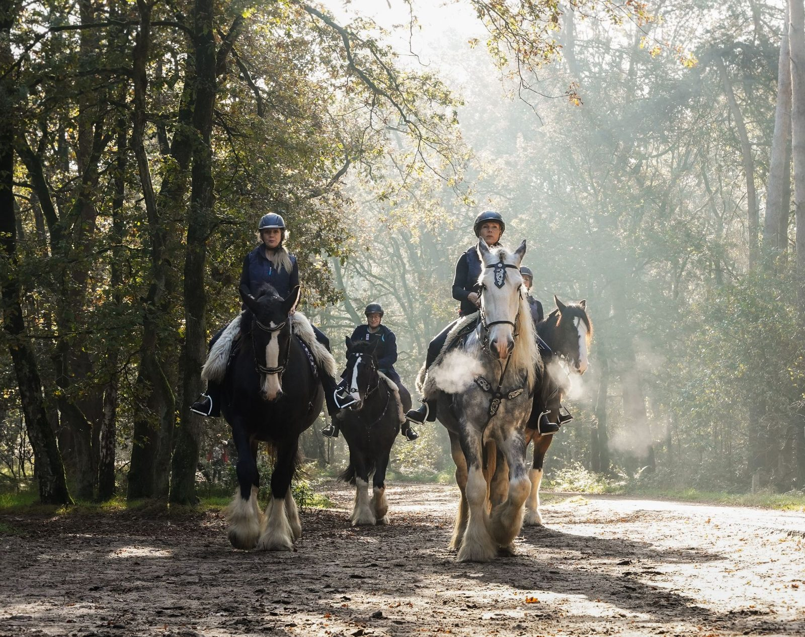
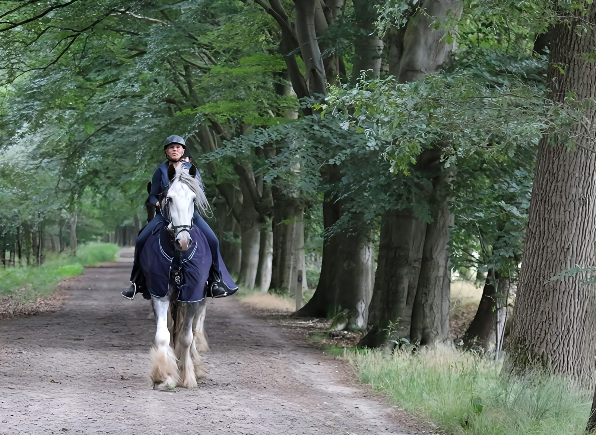
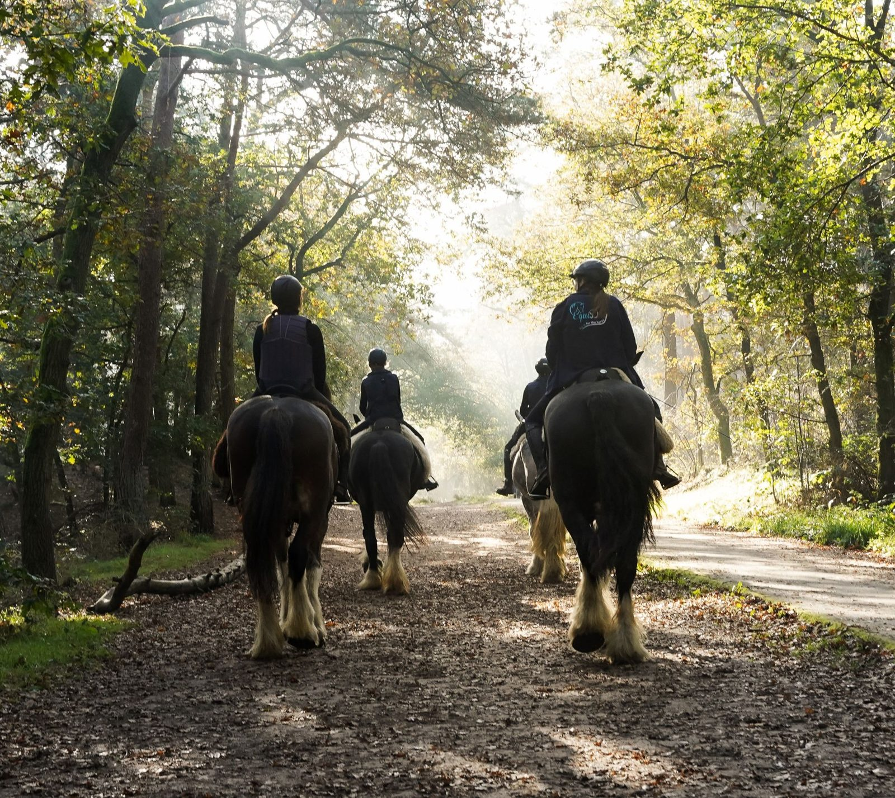
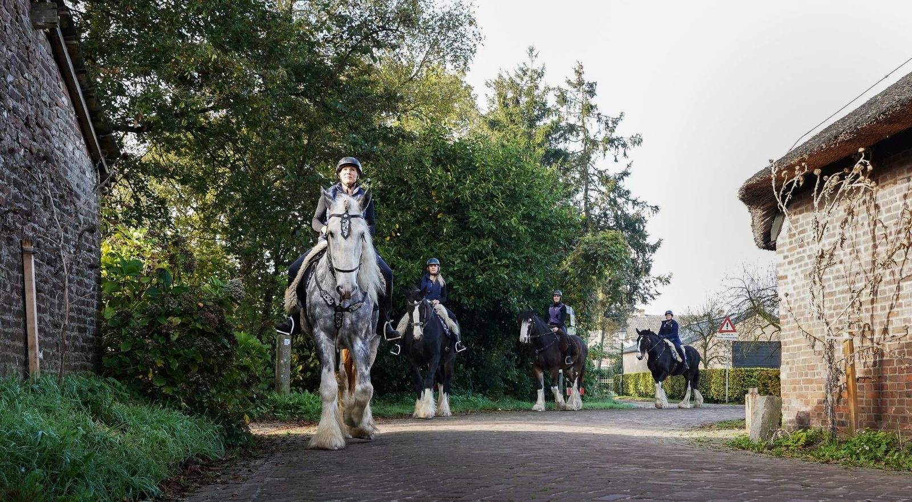
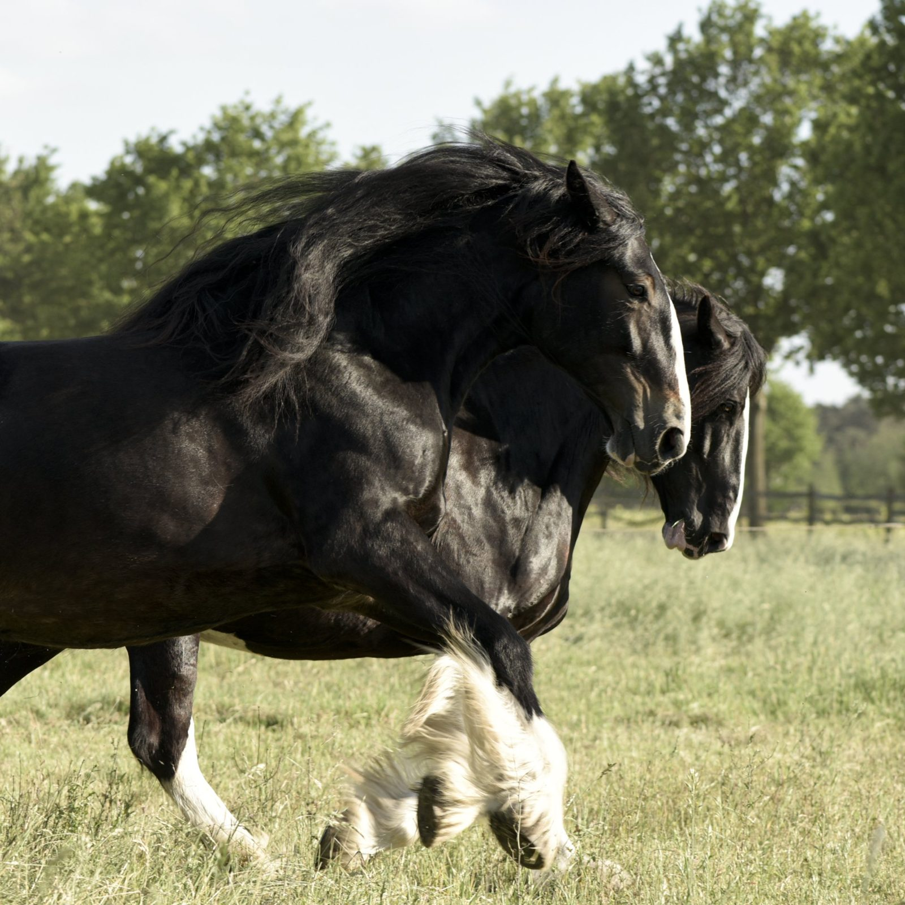
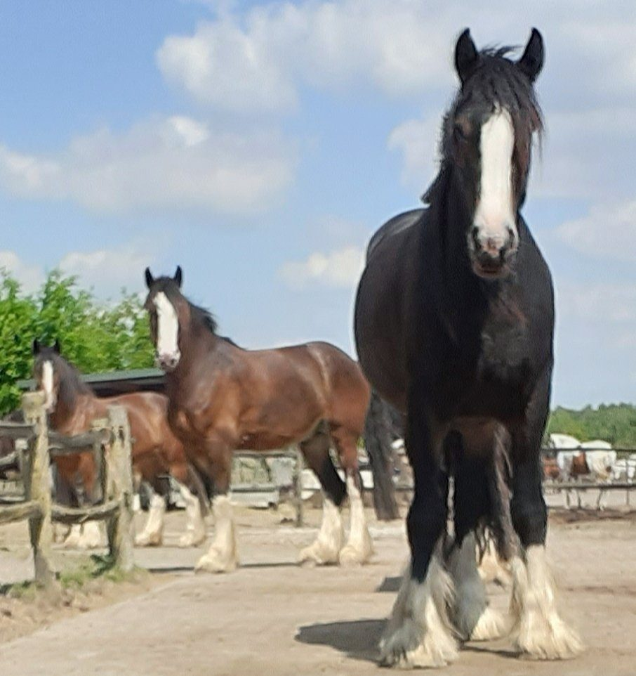
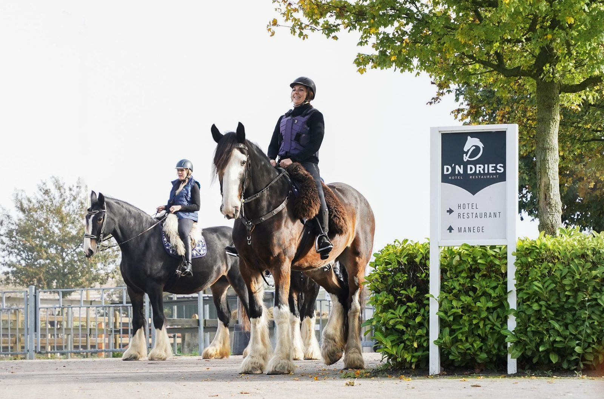

Samengestelde rit
Rijden met maximaal 4 ruiters, op de vaste data in de agenda. Leuk als je graag nieuwe mensen ontmoet.
1,5 uur v.a. € 62,50Meer info

Buitenritten voor gevorderde ruiters op één van onze zeven Gentle Giants. Met rust, aandacht en ruim de tijd om het Shire-ras echt te leren kennen.
Samen met andere ruiters, privé met je eigen gezelschap, een hele dag of twee dagen retreat.

Rijden met maximaal 4 ruiters, op de vaste data in de agenda. Leuk als je graag nieuwe mensen ontmoet.

Helemaal voor jou en je gezelschap. Geef je wensen vooraf aan, dan stellen we de rit daarop samen.

Een hele dag op pad met je Shire: twee ritten door de duinen met lunch in de herberg of een picknick.

Twee dagen rust, natuur en yoga, met een hotelovernachting en maximaal vier deelnemers.
Bij ons maak je de hele Shire-ervaring mee: je zorgt zelf voor je paard. Reken in totaal op ongeveer 3 uur.
We ontvangen je op Pensionstal D'n Dries in Drunen, maken kennis met de Shires en maken de indeling.
Elke Shire heeft zijn eigen barokke tuig. Je poetst zelf en helpt mee met opzadelen, en dan stap je op. Met een opstapje.
1,5 tot 2 uur door het Nationaal Park, in alle drie de gangen. Het tempo past bij het weer en bij de ruiters.
Afzadelen, tuig schoonmaken en de Shires hun welverdiende bak voer geven. Daarna is er tijd voor foto's.
Samengestelde ritten rijden we op vaste data. Hier zie je meteen hoeveel plaatsen er nog vrij zijn.
Vanaf oktober 2026
Voor het welzijn van onze paarden en jouw veiligheid hanteren we duidelijke voorwaarden. Daar wijken we niet van af.


De kudde bestaat uit zeven Shires: drie merries en vier ruinen. Ze staan 24/7 buiten in kuddeverband, met altijd ruwvoer en in de zomer dagelijks op de wei.
Ze hebben minimaal twee rustdagen per week, lopen hooguit 1,5 tot 3 uur per dag en worden regelmatig gecontroleerd door de fysiotherapeut, tandarts, hoefsmid en dierenarts.
"Paardenwelzijn, goed zijn voor je paarden, is voor mij de normaalste zaak van de wereld."Anneke
Maak kennis met de Shires
Ik ben Anneke van Beek Baks. Mijn allereerste Shire-liefde, Chess, kocht ik als veulen van acht maanden. Inmiddels heb ik zeven Shires, en met Brianna ook mijn eerste zelf gefokte veulen.
De Shires staan op het terrein van Hotel Restaurant D'n Dries in Drunen, aan de rand van het Nationaal Park. Na de rit kun je daar heerlijk eten, drinken en zelfs overnachten.
Stuur een berichtje met de rit en datum van je keuze, dan laten we je snel weten of het past.
Anneke van Beek Baks